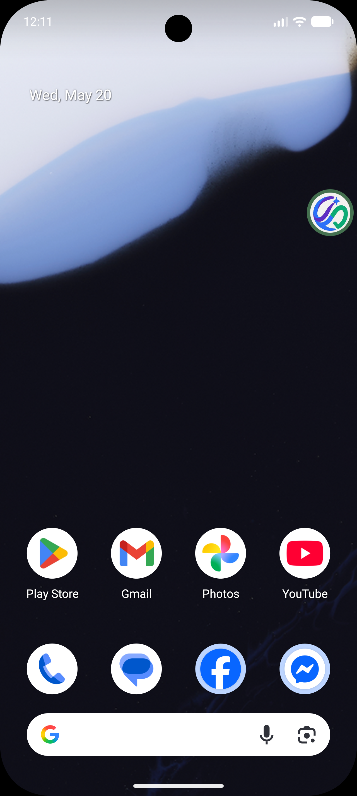
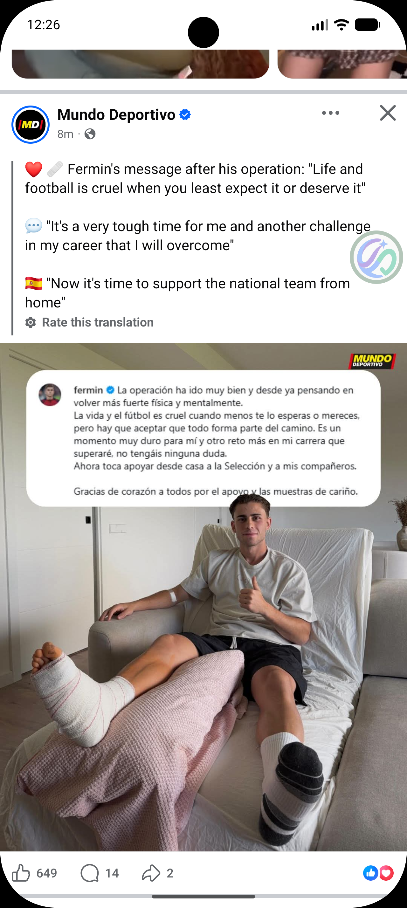
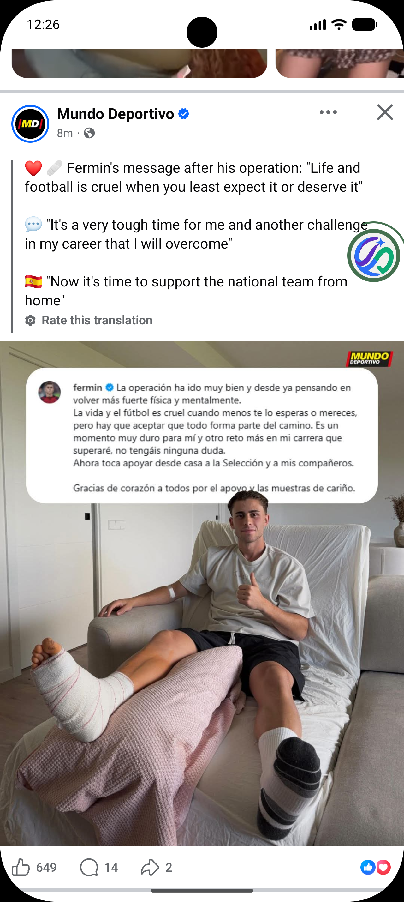
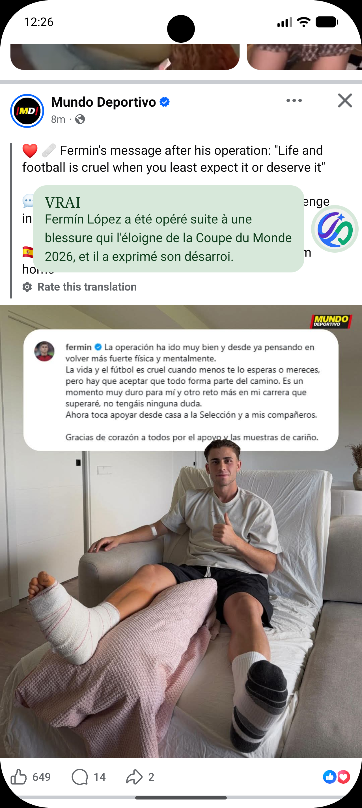
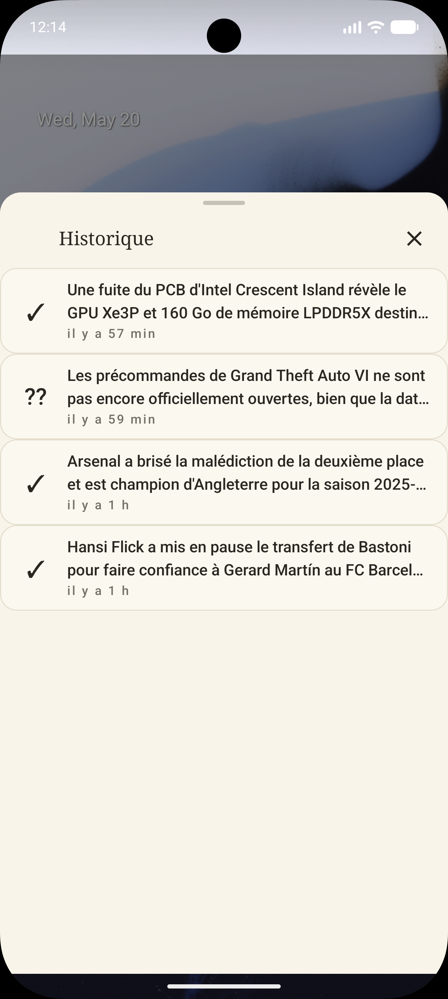
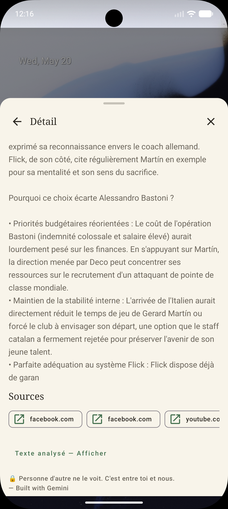
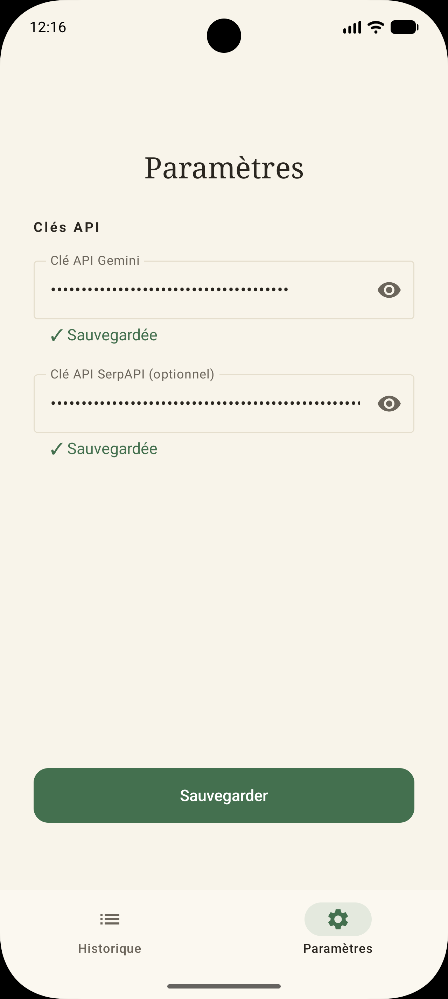
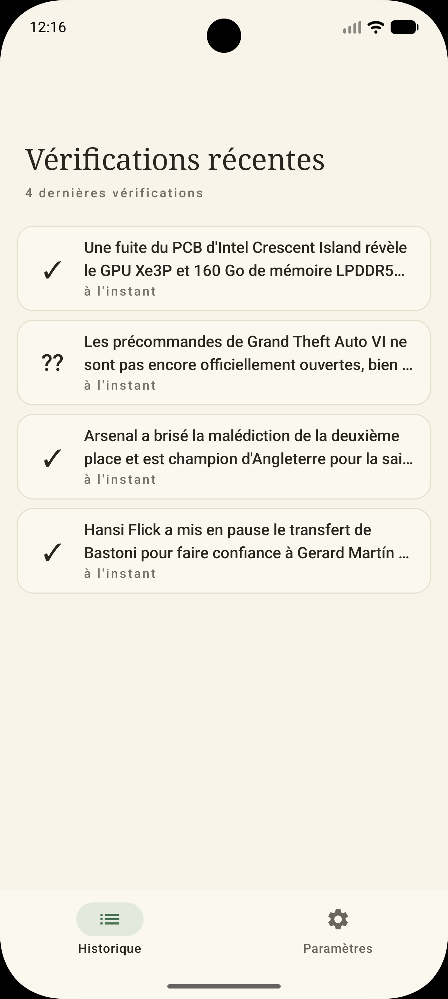

Bulle persistante
Flotte au-dessus de toutes les applis, déplaçable à une main, fade discret après 8 secondes d'inactivité.
La bulle flottante VeriSphere capture ce que tu lis, envoie à Gemini avec recherche Google, et te rend un verdict en moins de 30 secondes. Sans changer ton flow.

Vérifier une affirmation sur les réseaux, aujourd'hui, c'est jongler entre plusieurs apps. VeriSphere remplace toute cette chorégraphie par un geste qui ne casse pas ton flow.
VeriSphere est volontairement minimaliste. Pas de compte. Pas de notification permanente. Pas de chat. Une bulle, un verdict, des sources.
Flotte au-dessus de toutes les applis, déplaçable à une main, fade discret après 8 secondes d'inactivité.
VRAI · FAUX · DOUTEUX · NON VÉRIFIABLE. Quatre pastels éditoriaux, jamais alarmistes, lisibles d'un coup d'œil.
Gemini Vision pour lire l'image, SerpAPI pour interroger Google en live, puis Gemini reverdict qui re-décide en se basant sur la recherche la plus à jour.
Citations Search Grounding + résultats Google fusionnés, dédupliqués, ordonnés par fiabilité. Un tap, l'article s'ouvre.
Les 50 dernières vérifications stockées chiffrées localement via Android Keystore. Aucun upload, aucune sauvegarde cloud.
Code source public sur GitHub. Contributions bienvenues. Aucune dépendance opaque, aucun tracker.
Installation et activation prennent moins de deux minutes. Ensuite, la bulle est là dès que tu en as besoin.
À la première ouverture, VeriSphere t'amène dans les réglages Android pour activer le service. C'est ce qui permet à la bulle de capturer ce que tu lis, uniquement quand tu la maintiens.
Un long-press de la bulle déclenche la capture. Aucun bouton physique, aucune notification permanente. Le verdict apparaît en flash à côté de la bulle en moins de 30 secondes.
Le panneau de détail s'ouvre avec les sources, le texte extrait par OCR, et la synthèse Google qui a soutenu le verdict. Tu cliques sur une source pour ouvrir l'article original.
Captures réelles de l'app. Sur le même post Facebook, la bulle traverse trois états : elle attend en veille, traite ta demande pendant la vérification, puis affiche le verdict en flash juste à côté.



VeriSphere fonctionne en BYOK (Bring Your Own Key). Les deux clés sont gratuites à obtenir — il suffit d'un compte Google pour Gemini et d'une inscription email pour SerpAPI. Tu les colles dans l'onglet Paramètres à la première ouverture, elles sont chiffrées localement via Android Keystore et ne quittent jamais ton téléphone.
Le moteur de vérification — analyse l'image et émet le verdict. Free tier généreux : 15 requêtes/min et 1 500 requêtes/jour sur gemini-2.5-flash, largement suffisant pour un usage quotidien. Aucune carte bancaire demandée.
La couche de recherche Google en direct — alimente le pipeline de reverdict et fournit les sources cliquables. Free tier 250 recherches/mois, aucune carte bancaire demandée. Sans elle, VeriSphere fonctionne en mode Gemini-seul (verdict + sources Search Grounding).
Obtenir une clé SerpAPI gratuiteLe trafic sortant se limite à deux destinations : l'API Gemini (pour la vérification) et la recherche Google (via SerpAPI, pour les sources). Aucun analytics, aucun crash reporting, aucun backup cloud.
Capture, verdict détaillé avec sources contradictoires (le cas où Google contredit Gemini), historique des vérifications, et écran d'activation. Toutes les surfaces refondues en langage éditorial Wispr Flow.




SYSTEM_ALERT_WINDOW et le service d'accessibilité. iOS ne permet pas de surface flottante system-wide pour des apps tierces. Une version iOS demanderait un paradigme complètement différent (action de partage, extension). Ce n'est pas dans la roadmap actuelle.
L'APK v0.2.1-beta1 sera publié sur GitHub Releases dès la fin du ship-gate V1. En attendant, tu peux builder depuis les sources.